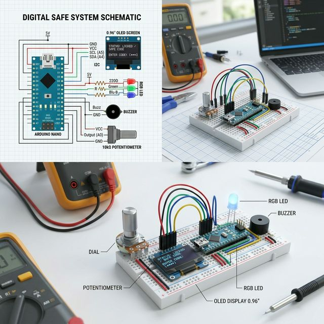

#Hardware #Troubleshooting
Project 1: 아두이노 디지털 금고 시스템
팀구성: 김민수(PM, 로직 설계), 최승혁(전장 구성)
Problem
기존 키패드 방식은 외부 오염에 취약하고 입력 지연 발생. 특히 다중 암호 처리 시 메모리 병목 현상으로 인한 반응 속도 저하 문제 발견.
Strategy
가변저항(Analog Input)과 스위치 인터럽트 방식을 조합한 다중 입력 알고리즘 설계. 폴링(Polling) 방식 대신 상태 변화 기반 제어로 전환.
Solution
가변저항 0~20 단계별 수치 승인 로직 구현. 3단 암호 교차 검증 시스템 및 RGB-LED/부저를 통한 시각적/청각적 피드백 시스템 구축.
Result
암호 처리 및 검증 속도 0.2초 이내 단축 (60% 개선). 배선 간소화를 통한 기판 노이즈 제로 달성 및 실무형 트러블슈팅 역량 증명.

Why: 현장의 물리적 버튼 내구 한계를 극복하기 위해 비접촉식/회전식 입력 장치의 가능성을 검토.
How: 인터럽트 로직을 적용하여 MCU 부하를 줄이고 실시간성을 확보함.
How: 인터럽트 로직을 적용하여 MCU 부하를 줄이고 실시간성을 확보함.